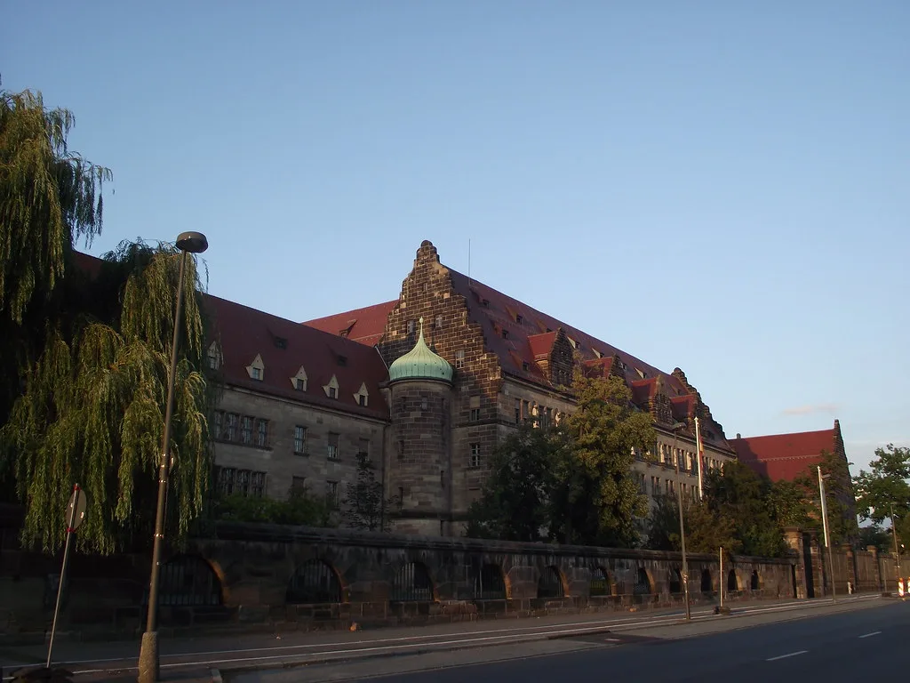
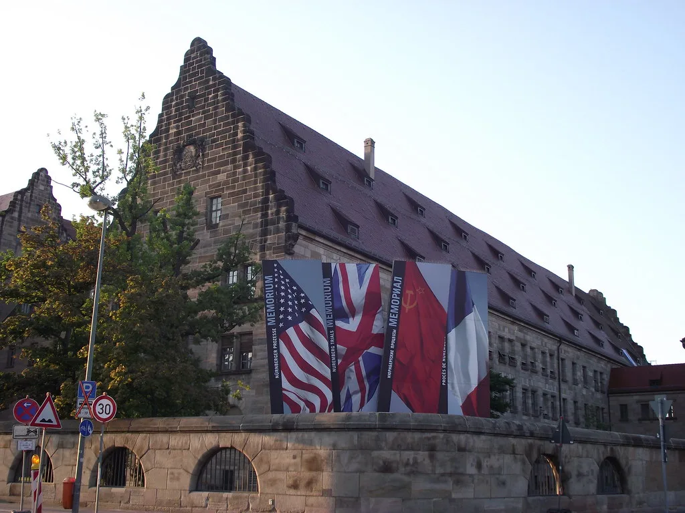

78년 역사 검찰청 폐지…10월 2일 공소청·중수청 출범
1948년 출범 이후 78년간 이어져 온 검찰청이 10월 2일 문을 닫는다. 그 자리는 수사와 기소 권한을 완전히 분리한 새로운 형사사법기구, 중대범죄수사청(중수청)과 공소청이 대신하게 된다. 정부는 최근 국무회의에서 두 기관의 설치 및 운영에 관한 법령을 의결하며 새 체제로의 전환을 공식화했다. 검찰이라는 단일 기관이 수사권과 기소권을 함께 쥐어 왔던 체제가 광복 이후 처음으로 막을 내리는 셈이어서, 이번 개편은 국내 형사사법 역사에서 상징적인 분기점으로 평가된다.
새 체제의 핵심은 수사와 기소 기능의 물리적 분리다. 중수청은 부패, 경제범죄, 방위사업, 마약, 국가안보, 사이버범죄, 사법방해 등 사회적 파급력이 큰 중대범죄의 수사를 전담한다. 기존 검찰이 보유했던 직접수사권 가운데 상당 부분이 이 기관으로 넘어가는 구조다. 반면 공소청은 수사기관이 송치한 사건에 대한 영장 청구와 기소 여부 결정, 재판에서의 공소 유지, 필요시 보완수사 요구 등 '기소 이후' 절차에 집중한다. 공소청의 수장은 기존의 검찰총장이 아닌 별도로 임명되는 공소청장이 맡게 된다.

다만 출범을 코앞에 둔 현 단계에서 준비 부족을 우려하는 목소리도 작지 않다. 공소청의 법정 정원은 2,292명으로 정해졌지만, 실제 출범 시점에는 이 가운데 80~85% 수준인 1,900명 안팎의 인력으로 운영을 시작할 것으로 알려졌다. 신설 기관이 정원을 다 채우지 못한 채 문을 여는 모양새여서, 초기 업무 공백이나 사건 처리 지연 가능성에 대한 지적이 법조계 안팎에서 꾸준히 제기돼 왔다.
제도 설계 측면에서도 보완 과제가 남아 있다는 평가가 나온다. 수사와 기소를 분리한 취지 자체는 권력 분산이라는 명분을 갖추고 있지만, 두 기관 사이의 협업 체계나 정보 공유 방식이 충분히 정교화되지 않았다는 우려다. 한 사건이 중수청에서 수사를 거쳐 공소청으로 넘어가는 과정에서 책임 소재가 불분명해지거나, 보완수사 요구가 반복되며 처리 기간이 오히려 길어질 수 있다는 걱정도 법조계 일각에서 제기된다.

이번 개편은 오랜 기간 논의돼 온 검찰 권한 분산 논의의 결과물이기도 하다. 그동안 검찰이 수사권과 기소권을 모두 쥐고 있는 구조가 권한 남용이나 '제 식구 감싸기' 논란으로 이어진다는 비판이 꾸준히 제기돼 왔고, 이를 해소하기 위한 제도적 대안으로 수사와 기소의 기관 분리가 추진돼 왔다. 다만 이 과정에서 여야 간 입장 차이가 컸던 만큼, 새 체제가 실제 현장에서 어떻게 자리 잡을지는 출범 이후에야 가늠할 수 있을 전망이다.
법조계에서는 당장 다음 달부터 접수되는 사건들을 통해 새 체제의 실효성이 시험대에 오를 것으로 보고 있다. 중수청과 공소청이 역할 분담 과정에서 혼선 없이 안착할 수 있을지, 인력 미충원으로 인한 업무 과부하를 어떻게 해소할지가 초기 운영의 관건이 될 전망이다. 정부와 국회 역시 출범 이후 운영 상황을 지켜보며 추가 보완 입법 여부를 검토할 것으로 예상된다.
기존 검찰 조직에 몸담았던 구성원들의 소속 재편도 눈여겨볼 대목이다. 수사 업무를 맡아온 인력 상당수는 중수청으로, 기소 및 공판 업무를 담당해온 인력은 공소청으로 각각 이동하게 되는데, 이 과정에서 조직 문화와 업무 방식의 차이로 인한 적응 기간이 불가피할 것이라는 관측도 나온다. 두 기관이 물리적으로는 분리되더라도 실무 차원의 협업 채널이 안정적으로 자리 잡기까지는 상당한 시행착오가 뒤따를 수 있다는 것이 법조계 안팎의 공통된 전망이다.